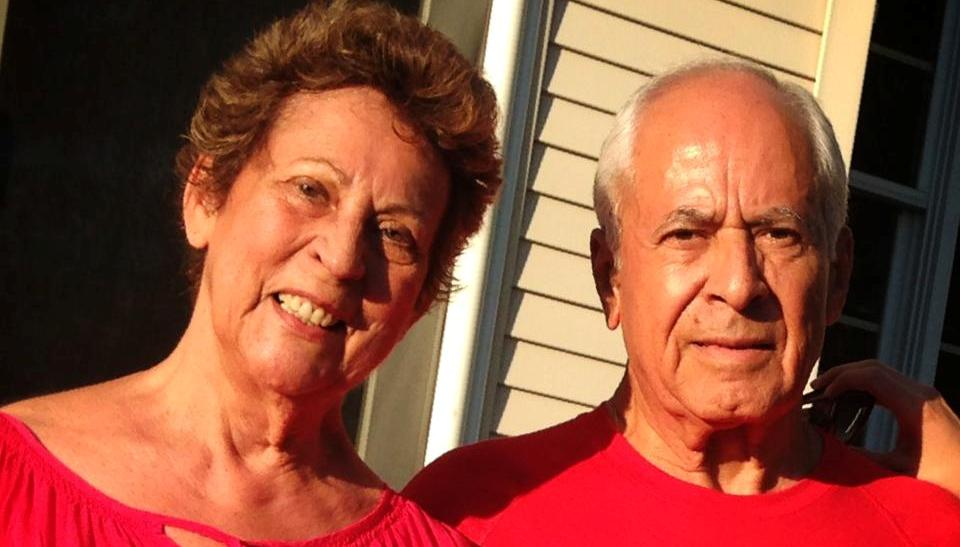

Baila, canta, rie a carcajadas, quiere a todo el mundo y todo el mundo la quiere. Cuenta chistes bobitos, pero que hacen reir mas y mejor que los otros chistes. Es la amalgama, suave y aterciopelada que une a todos, muy apretaditos, pero sin que nadie se lastime. Es Sonita la de los besitos friticos.
Junto con Jaime Pieschaón se convirtieron en los patriarcas de la familia exhilada en USA. La casa de los Pieschacón Gomezese, fue como el consulado de Colombia, donde todos eramos bien recibidos, nuestros problemas y dilemas escuchados y nuestras fiestas celebradas.
Con algo más de 30 años de vida en los Estados Unidos, ni ellos ni sus hijas Mónica, Claudia y Catalina, traicionaron nunca sus raices. Cumplieron con el sueño americano, integrándose, pero sin dejar a un lado su esencia, como colombianos y como latinos.
Disfrutando de un merecido retiro, su vida en la ciudad de Coral Springs, Parkland, transcurre en medio de la tranquilidad de los objetivos cumplidos.